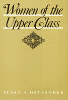

Although these women are economically and socially powerful, they are for the most part unliberated
Although these women are economically and socially powerful, they are for the most part unliberated


 Although these women are economically and socially powerful, they are for the most part unliberated
Although these women are economically and socially powerful, they are for the most part unliberated

|  |
Women of the Upper ClassSusan A. Ostranderpaper EAN: 978-0-87722-475-4 (ISBN: 0-87722-475-7) |
"This book, which steers clear of the society page report and the scandal sheet, is especially welcome. It gives us an objective picture of the kinds of lives upper-class women live, allowing us to see what the 'political economy' looks like from their unique perch and what their part is in maintaining it. A good corrective to the media image of upper-class women."
—Jessie Bernard
In a unique departure from the usual stereotypes, Susan Ostrander gained access to this elite community and interviewed the women in one U.S. region to study their roles, activities, and self-images. Among her conclusions, Ostrander shows that although these women are economically and socially powerful, they are for the most part, unliberated, being subservient to their husbands and to their duty to bear and raise children.
Excerpt available at www.temple.edu/tempress
"As the first research based on systematic in-depth interviews with upper-class women, Ostrander's study offers us a rich and nuanced view of how these women understand their role in public life, their class position, their hopes and fears for their children, and their points of conflict with and accommodation to their husbands."
—Contemporary Sociology
"A major contribution to our understanding of both gender and class power."
—G. William Domhoff, University of California
"Women of the Upper Class is readable. Ostrander has a good sense of narrative, an accurate eye for detail, and a well-tuned ear for speech. She makes her arguments unobtrusively and, whenever possible, lets the women speak for themselves."
—Mary Ellen S. Capek, The Women’s Review of Books
Acknowledgements
1. Introduction: the Upper-Class Woman
2. The Meaning of Upper Class
3. Wife
4. Mother
5. Club Member
6. Community volunteer
7. Tensions and Contradictions
Appendix A: Description of Sample
Appendix B: Interview Guides
Notes
Bibliography
Susan A. Ostrander is Professor of Sociology at Tufts University.
Women in the Political Economy, edited by Ronnie J. Steinberg.
No longer active.
Women in the Political Economy, edited by Ronnie J. Steinberg, includes books on women and issues of work, family, social movements, politics, feminism, and empowerment. It emphasizes women's roles in society and the social construction of gender and also explores current policy issues like comparable worth, international development, job training, and parental leave.
© 2015 Temple University. All Rights Reserved. This page: http://www.temple.edu/tempress/titles/319_reg.html.